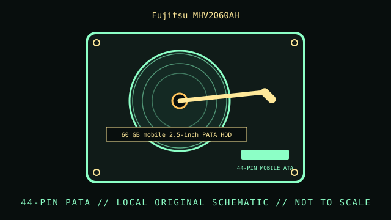

[ INDIVIDUAL COMPONENT // HARD DISK DRIVE ]
Fujitsu MHV2060AH
60 GB mobile 2.5-inch PATA HDD. This record is limited to the exact model and documented variant; related model numbers, revisions and capacities can have different interfaces and specifications.

IDENTIFICATION: Match the complete label, suffix, firmware and drive inquiry with the cited model documentation. Do not infer sector format or recording method from product family alone.
Verified model specifications
| Dedicated catalog subcategory | Compact and mobile HDDs |
|---|---|
| Exact model | Fujitsu MHV2060AH |
| Product generation | 60 GB mobile 2.5-inch PATA HDD |
| Form factor | 2.5-inch mobile; this classification is not a dimensional drawing. |
| Interface | ATA / PATA mobile interface, 44-pin family. |
| Capacity, performance, sector / recording details | 60 GB capacity; 5400 RPM per the MHV2xxxAH product manual. Sector format, buffer and specific usable capacity depend on exact model/revision and host handling. |
| Compatibility | PATA laptop/embedded host only. Check physical thickness, connector, voltage and LBA/BIOS support before mounting in an older computer. |
Handling, service & preservation
- Do not assume an adapter cable is pinned correctly; verify pin 1 and voltage before power. Image aging media before diagnostics that write metadata.
- Photograph the full label, board marks, connectors, jumpers/carrier, and date/firmware codes before service; retain the exact model suffix with collection metadata.
- Never open a hard drive outside a qualified clean environment. Stop repeated power-on attempts if the unit clicks, drops offline, or develops read errors.
- Preserve source data by making independent copies and validating checksums; SMART/self-tests cannot guarantee reliability. Distinguish measured condition from manufacturer specifications.
Model-specific source
- Fujitsu MHV2060AH Product Manual (archival scan)Fujitsu product manual lists the MHV2060AH model and its capacity/speed class; verify the exact suffix and revision from the device label.
For variants with family manuals, use the model-specific table and document revision that matches the drive label.